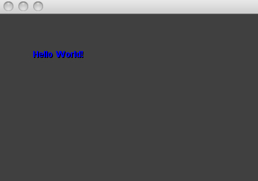

Image:XcodeIntro-C4App.jpg
From C4 Engine Wiki

No higher resolution available.
XcodeIntro-C4App.jpg (365 × 256 pixel, file size: 13 KB, MIME type: image/jpeg)
File history
Click on a date/time to view the file as it appeared at that time.
| Date/Time | Dimensions | User | Comment | |
|---|---|---|---|---|
| current | 17:37, 8 June 2011 | 365×256 (13 KB) | JaySoyer (Talk | contribs) | |
| 00:52, 22 November 2006 | 333×229 (7 KB) | Lgoss007 (Talk | contribs) |
- Search for duplicate files
- Edit this file using an external application
See the setup instructions for more information.
Links
The following page links to this file:
Metadata
This file contains additional information, probably added from the digital camera or scanner used to create or digitize it. If the file has been modified from its original state, some details may not fully reflect the modified file.
| Pixel composition | RGB |
|---|---|
| Orientation | Normal |
| Horizontal resolution | 72 dpi |
| Vertical resolution | 72 dpi |

{kind=link}
{kind=link}
{kind=link}
{kind=link}
{kind=link}
{kind=link}
{kind=link}
{kind=link}
{kind=link}